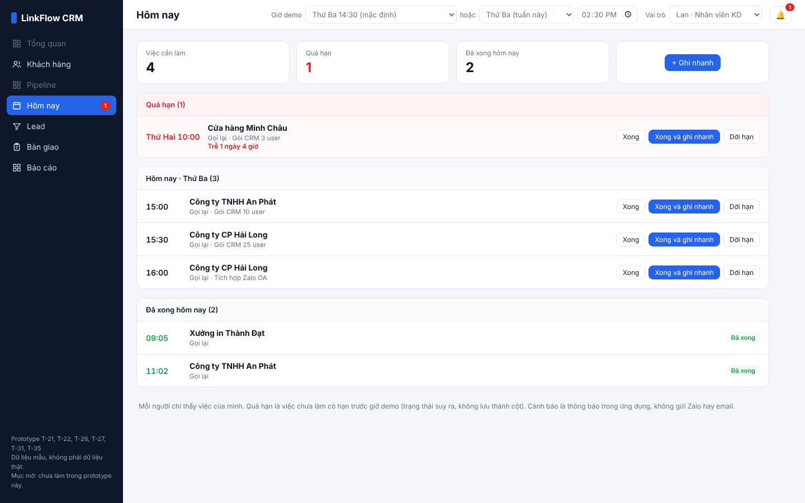
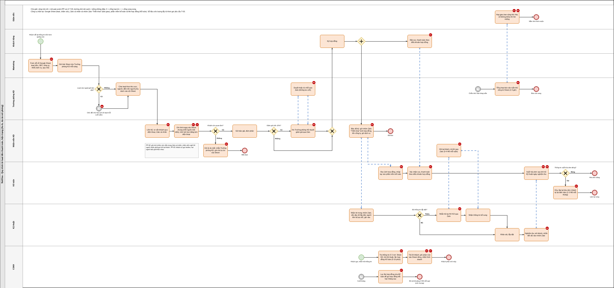
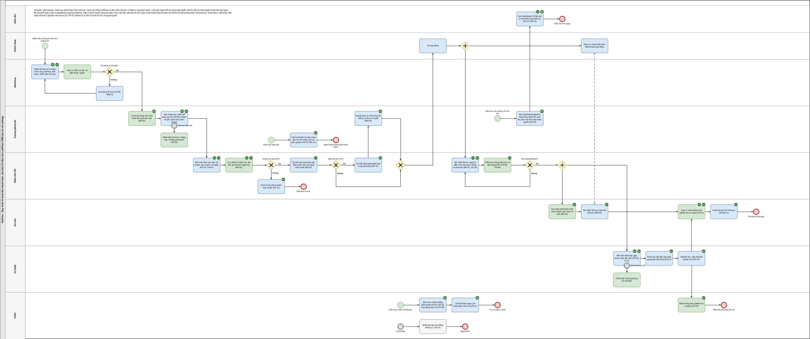
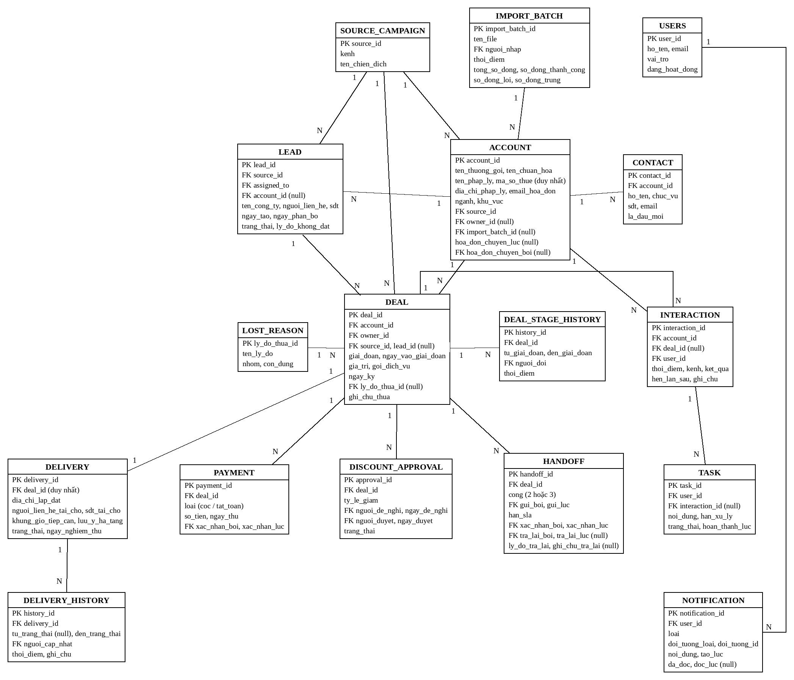

One shared customer record for Marketing, Sales, Engineering, Accounting and Customer Service, replacing handoffs over chat with gates, required fields and SLAs.

NetVina is an imaginary SME selling internet, cameras and digital infrastructure services to businesses. This project takes the BA through the whole chain on a single product, working solo as analyst, product owner and prototype builder.
Marketing, Sales, Engineering, Accounting and Customer Service each track customers separately and hand work over by chat. Leads wait, handoff details go missing, invoices are redone, and nobody sees where a customer stands.
A lean B2B CRM built around a unified customer profile, with three independent status streams owned by three teams, three Handoff Gates with mandatory fields, and SLAs counted in working hours.
A full requirements set with traceability, a working HTML prototype, 317 test cases and two simulated UAT rounds: 43 of 67 steps passed in round 1, 66 of 67 in round 2.
Six stages, each with concrete deliverables.
Business Case, Stakeholder Register, Scope Statement (In/Out), CRM desk research
Elicitation summary, 11 pain points, assumptions log, first User Stories
BPMN As-Is and To-Be, three State Diagrams, ERD and data dictionary
BRD, 36 User Stories, SRS, NFRs, permissions, traceability, SQL, prototype
317 Test Cases, 12 UAT scenarios, two runs, defect log
User Manual, project dossier, portfolio package
The current flow depends on people remembering to message each other. The five pains below drove most of the requirements.
Leads sit unassigned with no owner or deadline.
Sales passes a signed deal to Engineering without address, contact or access times.
Invoice details are collected late and in the wrong format.
“Contracts signed” and “deposits received” do not match; both get called “confirmed”.
Nobody can see which step a customer is at without asking around.

BPMN As-Is (swimlane). Labels are in Vietnamese, the language of the simulated stakeholders. Source: project folder 03_Mo_hinh_hoa.
“Confirmed” used to mean different things to different teams. The design splits one fuzzy status into three, each owned by exactly one team, and connects them with Handoff Gates.
A lead enters the queue only with minimum contact data. The sales manager must assign it within 2 working hours, otherwise it is flagged overdue.
A signed deal can be handed off only when four required fields are filled. Engineering must confirm “Received” within 4 working hours, or return it with a reason.
Acceptance notifies Accounting and Customer Service automatically, so invoicing and aftercare start from the same fact.
Commercial, Payment and Deployment statuses are independent and each has one owner.
A discount above 10% needs approval from the sales manager; a manager’s own request goes to the Director.
Handoff requires installation address, on-site contact, phone number and access time window.
A tax code is unique per customer; a duplicate shows the owning account but not its content.
Owner or sales manager can move a deal forward or back between Contact, Consulting, Quote and Negotiation. Every move is written to history.
“Signed” requires a signing date and the applied discount. “Lost” requires a reason picked from a fixed list.
Moves one step at a time: no skipping and no going back. Acceptance needs a date that is not in the future.

BPMN To-Be (swimlane): the same flow with the three gates, discount approval and SLA timers added. Labels are in Vietnamese.
Every requirement can be followed forward to a test and backward to the problem it solves.
Illustrative extract assembled from US-M5-02 rules and UAT-02 step 4; the full story has 6 Acceptance Criteria.
| ID | Story | Priority | AC |
|---|---|---|---|
| M5-01 | Send handoff form to Engineering | Must | 8 |
| M5-02 | Confirm “Received” | Must | 6 |
| M5-03 | Overdue handoff alert | Must | 5 |
| M5-04 | Return an incomplete form | Should | 5 |
| M5-05 | Update deployment status | Must | 7 |
| M5-06 | View deployment progress on profile | Must | 4 |
| M5-07 | Notify on acceptance | Must | 5 |
FR-06 → BR-04 → US-M5-01…04 → UAT-02, UAT-03The ERD was designed together with the reports, so each of the 25 defined metrics can be computed from stored data.

ERD, 17 tables. This figure is version 0.3 and predates change request CR-03 below; the data dictionary document includes the column.
A single-file HTML and JavaScript prototype with nine roles, a demo clock and role-based permissions. Prototype screens are in Vietnamese, matching the simulated users.
Each salesperson sees only their own work. Overdue tasks come first, and “Done and quick log” records an interaction in under 30 seconds.
Open full screen ↗12 UAT scenarios with 67 steps were executed against the prototype after 317 Test Cases were written. Round 1 exposed missing features and defects; round 2 followed the fixes.
| ID | Finding | Severity |
|---|---|---|
| D-01 | Notifications were plain text with no link to the form or profile | Medium |
| D-02 | Original source and campaign not shown on the deal | Medium |
| D-03 | “Reassign customers” had no server-side role check | Medium |
| D-04 | “Mark employee inactive” had no role check | Medium |
| D-05 | Menu showed items the role may not use | Low |
| D-06 | Demo clock offered only 6 fixed time points | Low |
| D-07 | Lost-reason label differed from the User Story | Low |
Gaps. Round 1 also found 9 requirements the prototype had not implemented yet (G-01 to G-09). Eight were built and re-tested. G-09, reconciling dashboard figures with the report specification, remains open because the prototype computes from its own sample data.
UAT was run with browser automation on the prototype by the author, so it demonstrates the method and the traceability, not real stakeholder sign-off.
Each team reports its own milestone, and every report names the milestone it counts. This removes the mismatch between signed contracts and invoiced amounts.
A reminder cannot stop incomplete information from crossing a handoff; a blocked form can.
A lead arriving at 19:00 starts its clock at the next working day, so the SLA is fair and measurable.
If time ran short, items like “return an incomplete form” and lead import would go first; renewal reminders were deferred to Phase 2.
The full package (BRD, User Stories, SRS, SQL, Test Cases, UAT results, User Manual) is organised by stage in the project folder.